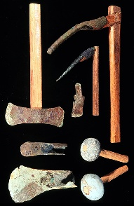

The Art of Computational Science
How to build a computational lab

|
|
The Art of Computational ScienceHow to build a computational lab |
|
| Deutsch | Español | Français | Italiano | Nederlands | Türkçe |
What's New? |
|
Questions? |

|
The Maya project is directed toward the construction of an open
laboratory for dense stellar systems, such as star clusters, star
forming regions, and galactic nuclei containing one or more massive
black holes. The presentation is centered around dialogues between two
astrophysicists who are developing the Kali code for simulating dense
stellar systems. In the process, they construct an open lab, Maya,
to set up initial conditions, run the Kali code, and analyze
the results. We are currently in a start-up phase, as described in our
revised five-year plan.
For more volumes, see the The Maya Project page. For a three-line description of each volume, see the The Maya Development Series page. |
|  |
The ACS Toolbox is a collection of software tools, useful for
large-scale simulations in any area of computational science.
These tools were developed within the context of the
Maya project, but they are presented
here as a standalone package. In order to use these tools,
the user does not need to know anything about the Maya project
(this is our goal; the full decoupling from Maya will probably take
place in 2007).
Currently, the ACS toolbox contains the following six tool modules.
We plan to provide stand-alone introductions to each one, but for now
we give the references to the corresponding Maya volumes. By clicking
on the title, you will be redirected to the respective web pages. If
you prefer to read each volume in postscript or pdf format, click on
the word "PS" or "PDF" listed after each title.
|

|
Our first book, written in 2003, contains an introduction to setting up N-body experiments, in 260 pages. It is still useful, offering a detailed explanation of a variable time step Hermite code written in C++. However, it will be deprecated in 2007, when it will be replaced by a similar volume, within the Maya school series. |